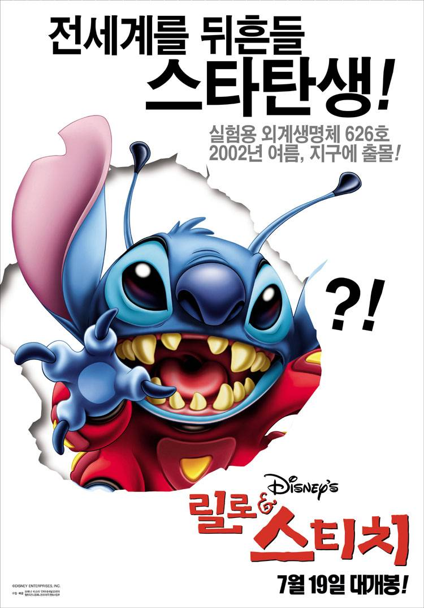
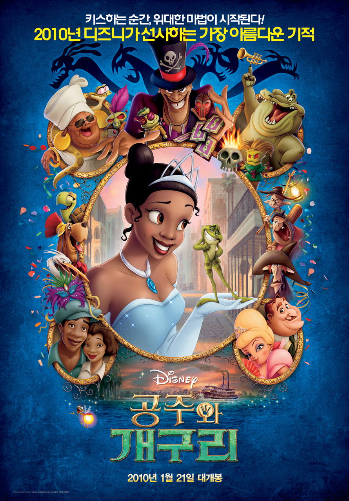
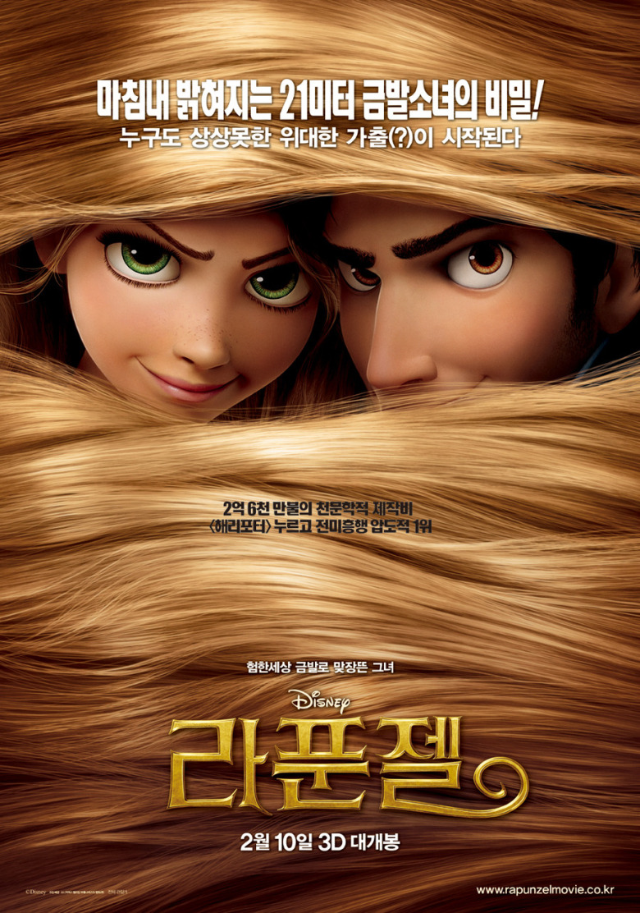
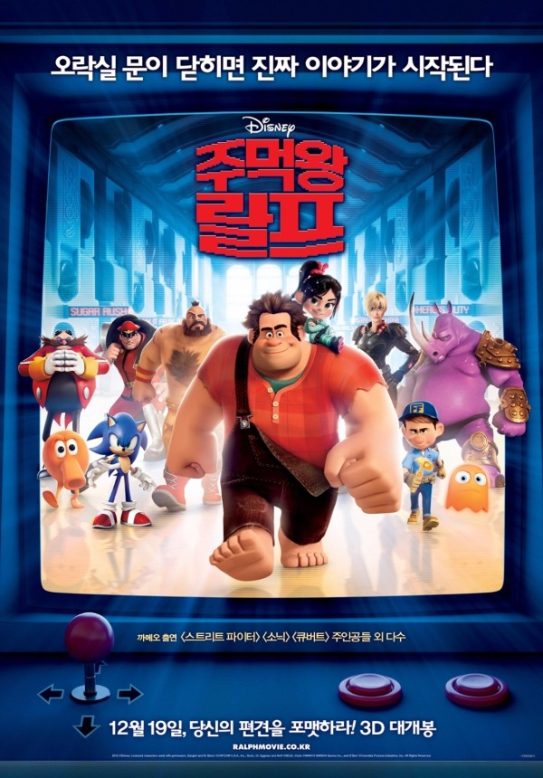
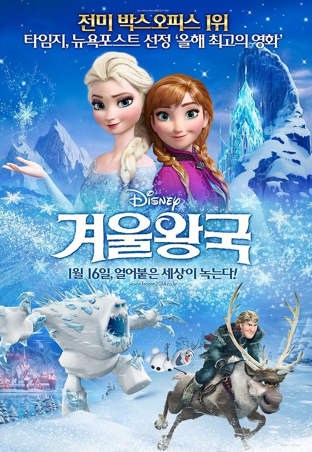
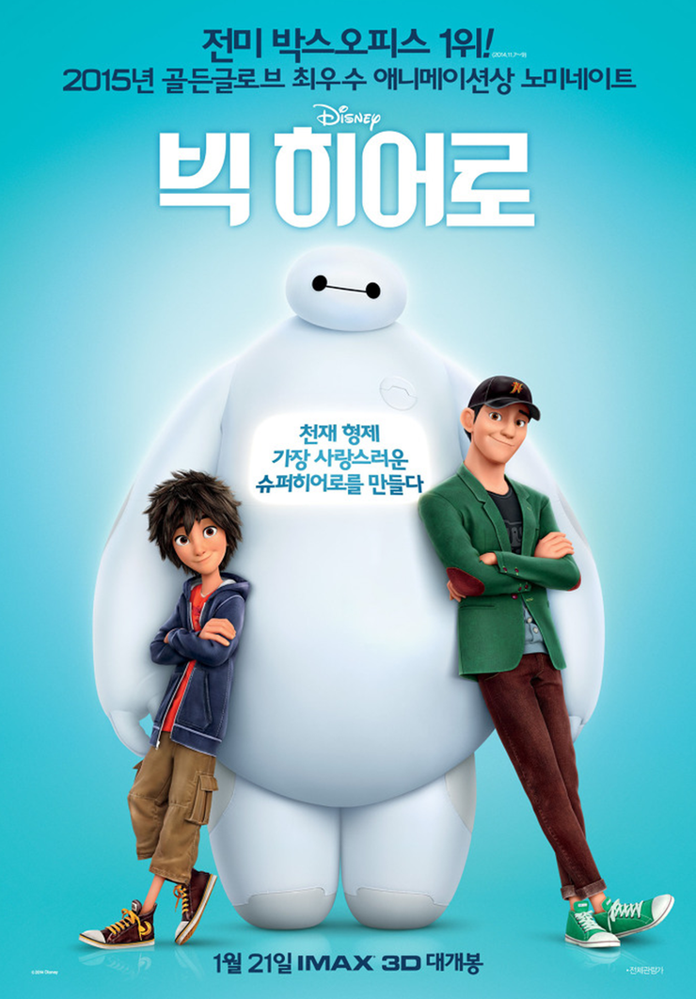
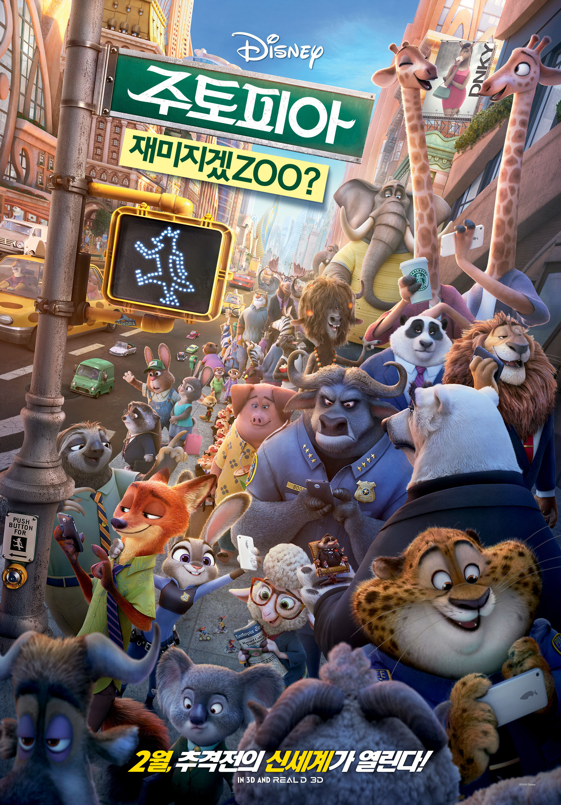
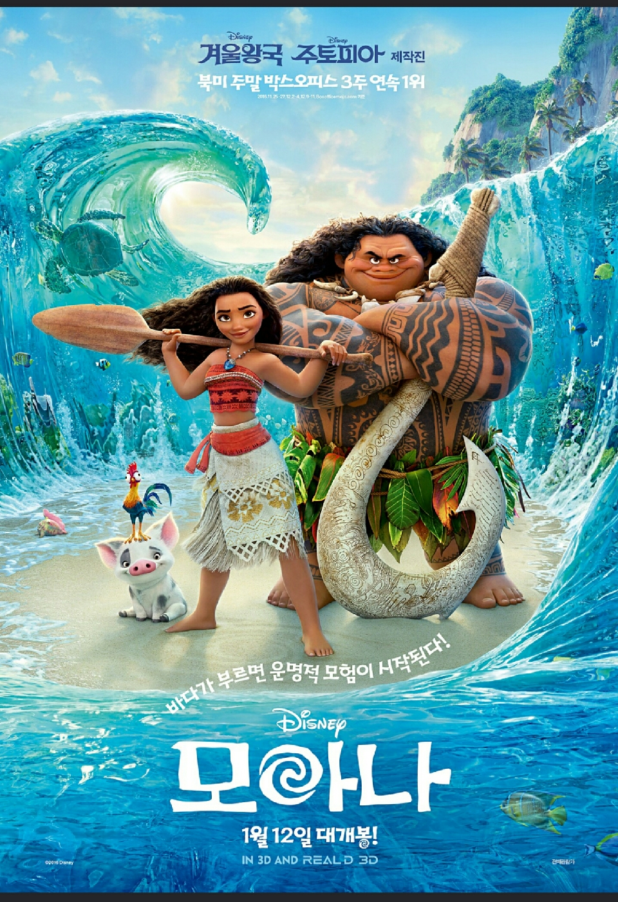

The History of
Disney
-

릴로와 스티치
- Lilo & Stitch (2002)
- 외로움을 많이 타는 소녀 릴로. 별똥별에게 빌었던 소원이 이루어진 걸까?
드디어 자신을 버리지 않을 영원한 친구를 만나게 되었다.
하지만 외계에서 온 이 친구, 뭔가 수상하다.
사고뭉치 릴로와 그녀의 언니 나니, 그리고 외계에서 온 스티치의 가족 만들기가 시작된다.
-

공주와 개구리
- The Princess and the Frog (2010)
- 꿈 많은 소녀 '티아나'는 어느 날, 마법에 걸린 능글능글한 자칭 왕자 개구리를 만난다.
첫 만남에 키스를 원하는 뻔뻔함!
그러나 '개구리 왕자'이야기를 알고 있는 티아나는 '딱 한번만'이라는 말에 그 푸르딩딩한 입술에 눈 딱감고 키스한다.
그리고 눈을 떴지만 왕자는 어디에도 없다. 그럼 뭐가 변한거지? 오 마이 갓, 그녀가 개구리로 변한다!
-

라푼젤
- Tangled (2011)
- 올드보이도 못 견뎠을 장장18년을 탑 안에서만 지낸 끈기만점의 소녀 라푼젤.
어느 날 자신의 탑에 침입한 왕국 최고의 대도를 한방에 때려잡는다.
그리고 그를 협박해 꿈에도 그리던 집밖으로의 모험을 단행한다. 그런 그녀 앞에 흥미진진한 사건들이 터지기 시작하는데...
-

주먹왕 랄프
- Wreck-It Ralph (2012)
- 비트 게임 ‘다고쳐 펠릭스’에서 건물을 부수는 악당 주먹왕 랄프.
30년째 매일같이 건물을 부수며 직업에 충실해왔지만, 악당이라는 이유로 누구도 그를 좋아하지 않는다.
모두에게 인정 받는 영웅이 되고 싶은 마음에 급기야 자기 게임을 이탈하여 다른 게임으로 들어가는 랄프!
랄프는 과연 게임 세계의 새로운 영웅이 될 수 있을 것인가!
-

겨울왕국
- Frozen (2014)
- 서로가 최고의 친구였던 자매 ‘엘사’와 ‘안나’.
하지만 언니 ‘엘사’에게는 하나뿐인 동생에게조차 말 못할 비밀이 있다.
모든 것을 얼려버리는 신비로운 힘이 바로 그것.
‘엘사’는 통제할 수 없는 자신의 힘이 두려워 왕국을 떠나고,
얼어버린 왕국의 저주를 풀기 위해 ‘안나’는 언니를 찾아 환상적인 여정을 떠나는데...
-

빅히어로
- Big Hero 6 (2015)
- 천재 공학도 ‘테디’가 개발한 힐링로봇 ‘베이맥스’!
‘테디’의 동생이자 로봇 전문가인 ‘히로’는 도시가 파괴될 위기에 처하자
‘베이맥스’를 슈퍼히어로로 업그레이드 하는데…
과연 이들은 도시의 위험을 막아낼 수 있을까?
-

주토피아
- Zootopia (2016)
- 누구나 살고 싶은 도시 1위, 주토피아.
교양 있고 세련된 라이프 스타일을 주도하는 이 곳을 단숨에 혼란에 빠트린 연쇄 실종사건이 발생한다!
주토피아 최초의 토끼 경찰관 주디 홉스는 48시간 안에 사건 해결을 지시 받자
뻔뻔한 사기꾼 여우 닉 와일드에게 협동 수사를 제안하는데…
스릴 넘치는 추격전의 신세계가 열린다!
-

모아나
- Moana (2017)
- 모든 것이 완벽했던 모투누이 섬이 저주에 걸리자
바다가 선택한 소녀 모아나는 섬을 구하기 위해 머나먼 항해를 떠난다.
저주를 풀기 위해서는 오직 신이 선택한 전설의 영웅 마우이의 힘이 필요한 상황!
모아나는 마우이를 우여곡절 끝 설득해, 운명적 모험을 함께 떠나는데…
바다가 부르면 운명적 모험이 시작된다!